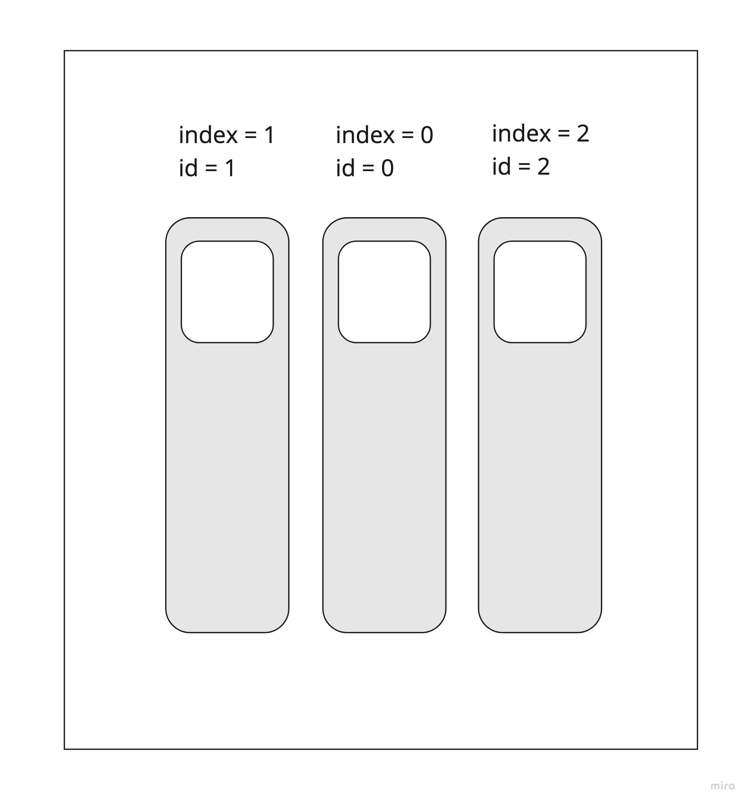

Android курс в Технополисе 2019
В этом уроке мы разберемся с тем как обрабатывать тачи в Android.
MotionEvent
MotionEvent - это событие касания экрана. MotionEvent работает с любыми способами ввода:
- палец;
- стилус;
- мышь.
В рамках этого урока мы будет рассматривать только касания пальцем.
MotionEvent содержит данные только об одном событии, это: касание экрана, нажатие кнопки, перемещение пальца и т.п. Рассмотрим типичный жизненный цикл касаний:

Практически всегда обработка касания начинается с события DOWN, когда пользователь коснулся экрана. Далее, при движении пальца приходит событие MOVE. Завершается жест событием UP - в случае если жест завершен правильно, или событием CANCEL, если жест был отменен. Событий на самом деле больше, но чаще всего придется работать с четырьмя событиями: DOWN, MOVE, UP, CANCEL.
Обработка событий
Самая частая ошибка при обработке событий это хранение ссылки на MotionEvent. Никогда не храните ссылки на MotionEvent! Предположим, мы храним предыдущий MotionEvent и сравниваем его с новым. Во время работы приложения мы столкнемся с тем, что у нас все события равны. Почему так получается? Все дело в том, что Android оптимизирует работу с MotionEvent и для того, что бы не создавать и не уничтожать кучу объектов с событиями тачей, события переиспользуются.

Существует MotionEvent Pool который содержит некоторое количество событий ввода. Когда происходит новое событие тача, пул выдает его при помощи метода obtain(). Когда работа с тачем завершена, MotionEvent возвращается обратно в пул при помощи метода recycle().
Как же хранить информацию о тачах?
- вызвать вручную
obtain(главное не забыть вызватьrecycle); - хранить только необходимую информацию из
MotionEvent.
Диспетчеризация нажатий
Как View понимает что именно ей нужно обработать нажатие? Для этого существует система перехвата тачей:
1) Когда система понимает что произошло событие касания экрана и у нас есть ViewGroup, которое попадает под область касания, она вызывает метод onInterceptTouchEvent.
2) ViewGroup должен ответить будет ли он перехватывать этот тач или нет. В случае, если возвращается true, будет вызван onTouchEvent, в противном случае MotionEvent прокидывается к дочернему View и там вызывается метод onTouchEvent
3) Если View обработал событие, то возвращается true и событие покидает текущую иерархию, в противном случае MotionEvent будет передан обратно родителю и будет вызыван метод onTouchEvent родителя.

Multi touch
Multi touch это события множественного касания. Когда человек использует несколько пальцев одновременно. Для Multi тачей вводятся два новых события
POINTER_DOWN. Прикосновение пальцем;POINTER_UP. Поднятие пальца.
Кадому пальцу назначаются два параметра:
-
индекс. Порядковый номер пальца. Не привязан к пальцу, один палец может иметь разные индексы в течение одного касания.
-
id. Идентификатор пальца. Привязан к конкретному пальцу от начала и до конца касания
Пример:
Коснулись экран одним пальцем. Его параметры: index = 0, id = 0.

Коснулись экран вторым пальцем. Его параметры: index = 1, id = 1.

Коснулись экран третьим пальцем. Его параметры: index = 2, id = 2.

Уберем крайний левый палец. При таком действии индексы пальцев сдвигаются на один, но id остаются прежними.

Уберем еще один палец слева. Оставшийся палец будет иметь параметры: index = 0, id = 2.

Вернем недавно убранный палец. Его параметры будут: index = 0, id = 0.

И вернем крайний левый палец. Его параметры: index = 1, id = 1.

Для того, что бы понять какой жест сейчас производил пользователь приходится обрабатывать очень много данных, хранить все касания, запоминать положение пальцев и т.п. в Android уже есть классы, упрощающие нам работу. Об этих классах пойдет речь в следующих разделах.
Отслеживание скорости
Для того, что бы отслеживать скорость перемещения пальцев в Android существует класс VelocityTracker. Работа с ним чем-то похожа на работу с MotionEvent - объекты тоже находятся в пуле и для получения VelocityTracker необходимо вызвать метод obtain:
vt = VelocityTracker.obtain()
Что бы VelocityTracker понимал как пользователь передвигает пальцы, необходимо все MotionEvent передавать в метод addMovement:
vt.addMovement(event)
Когда мы захотим получить текущую скорость перемещения, нужно вызвать метод:
vt.computeCurrentVelocity(VELOCITY_UNITS)
Что такое VELOCITY_UNITS? Это то количество пикселей, относительно которых будет считаться скорость. Например, если VELOCITY_UNITS = 1000, то скорость будет измеряться в том, сколько тысяч пикселей в секунду проходит палец на экране.
После работы, нужно не забывать утилизировать объект вызовом:
vt.recycle()
GestureDetector
Класс, который позволяет понять какой именно жест сейчас сделал пользователь. Аналогично с классом VelocityTracker необходимо передавать все тачи в GestureDetector и в случае, если произошел какой-то из известных жестов, будет вызван соответствующий метод:
- OnDown
- OnFling
- OnLongPress
- OnScroll
- onShowPress
- onSingleTapUp
- …
Но не все жесты распознает GestureDetector, например, для распознавания жеста приближения, есть специальный класс ScaleGestureDetector.
Что почитать
https://developer.android.com/training/gestures https://android.jlelse.eu/the-android-touch-system-from-a-slightly-different-perspective-71f29c86369a https://developer.android.com/reference/android/view/VelocityTracker